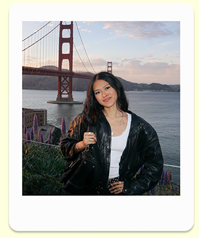
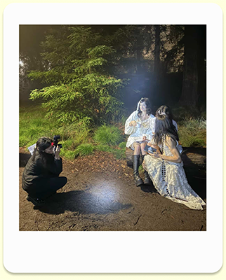

Off the screen
Hi! I'm Avalon, an interdisciplinary designer--from editorial design, UXUI, and photography, i am wildly passionate about breathing life into a vision and preserving human touch to my work.


My design philosophy is rooted in what I can serve to my community by working with others. By contributing my skills and learning from others, it gives design a new purpose through combined effort! With that, a growth mindset is integral to my philosophy. I strongly believe that part of the craft is dedication. I am always willing to push myself further to improve a design or project.